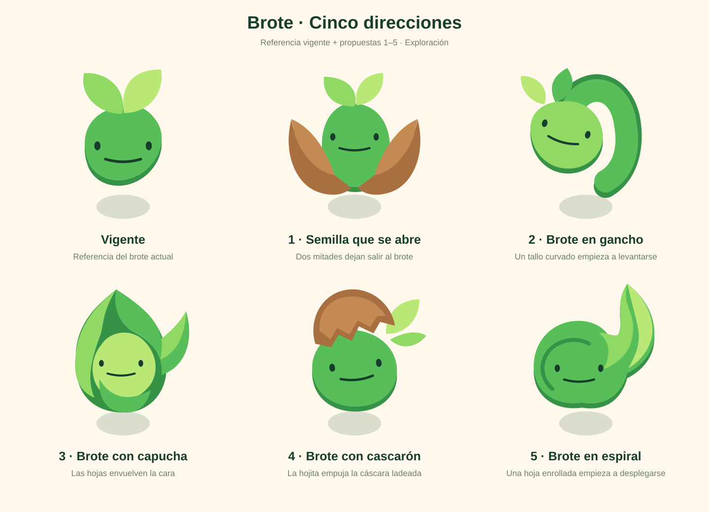
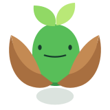
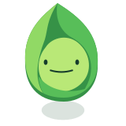
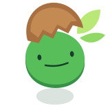

Brote · Cinco direcciones
Propuestas 1–5 · Exploración

1 · Semilla que se abre
Dos mitades dejan salir al brote

160 px100 px60 px32 pxIcono
2 · Brote en gancho
Un tallo curvado empieza a levantarse
160 px100 px60 px32 px
Icono
3 · Brote con capucha
Las hojas envuelven la cara

160 px100 px60 px32 pxIcono
4 · Brote con cascarón
La hojita empuja la cáscara ladeada

160 px100 px60 px32 pxIcono
5 · Brote en espiral
Una hoja enrollada empieza a desplegarse
160 px100 px60 px32 px
Icono